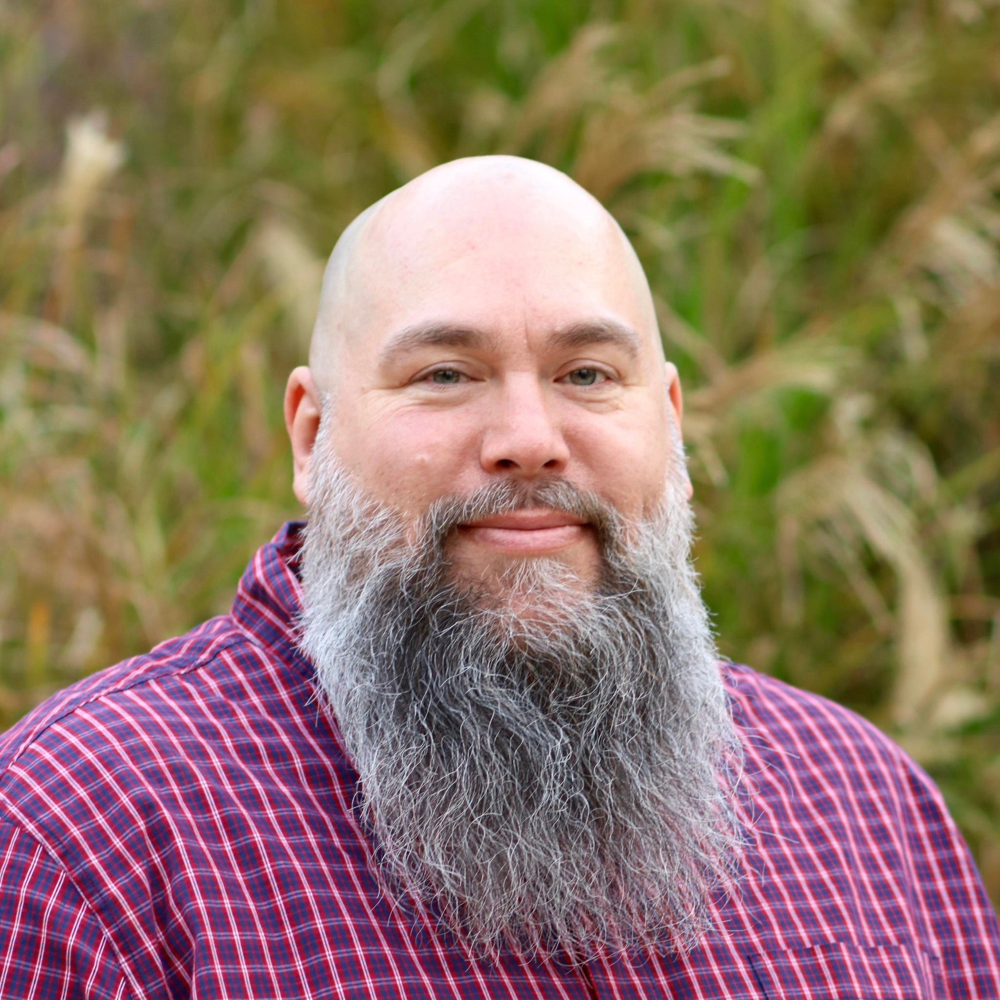

Matthew Williamson
Founder & CEO at Clevyr, Inc.
I'm a U.S. Marine Corps veteran, technology speaker, and CEO of Clevyr. I channel a passion for complex systems into AI-powered software that turns tough business problems into measurable results. If you would like to learn more about how AI is changing business, culture, and society, let's connect.

Pattern Recognition
I've made a career out of pattern recognition. Even in the Marine Corps, I was good at anticipating what was needed next and being ready before the request was spoken. That way of seeing the world followed me into technology.
Being in the right place at the right time often looks like luck from the outside. But more often than not, it's noticing signals early, understanding how systems behave, and moving before the wave crests.
As the founder and CEO of Clevyr, I lead a team dedicated to creating innovative digital solutions. My current passion lies in Semantic AI — pioneering systems that don't just process data, but truly understand meaning.
Based in Oklahoma City, I'm also proud to volunteer with the Down Syndrome Association of Central Oklahoma, combining my love for technology with community impact.
What I Do
Semantic AI
Pioneering AI systems that understand context and meaning, moving beyond simple pattern matching to true comprehension.
AI Strategy
Helping organizations navigate the AI landscape and implement solutions that drive real business value.
Technology Leadership
Building and leading teams that combine diverse talents to solve complex problems with innovative technology.
Things I've Built
infocard.ai
Your GitHub. Your Resume.
A GitHub-powered resume renderer running on Cloudflare's edge. Point it at a Markdown file in any public GitHub repo and get a clean, shareable professional card — no account, no friction. Parsing YAML frontmatter, rendering Markdown, and caching responses at the edge with Cloudflare KV so it stays fast worldwide.
Visit infocard.aipromptcard.ai
Prompts Worth Keeping.
The companion to infocard.ai. Curate, organize, and share your best AI prompts as clean, linkable cards. Good prompts are intellectual property — not ephemeral chat history. Built on the same edge-first architecture as infocard.ai, because good ideas deserve fast delivery.
Visit promptcard.aiThinking Out Loud
The Future of AI
On where we're headed
I think in five or ten years we'll stop talking about "apps" and "operating systems" the way we do today. AI will be the operating system. And it will be the apps.
Media, data, tools, workflows — all streamed, orchestrated, and shaped by an intelligence that knows you. Not just your preferences, but your history. Your patterns. Your context. Your imagination.
The real shift won't be multimodal or speed. It will be permanence of memory. An AI that remembers across sessions changes everything: how work gets done, how software is designed, how value is created, how trust is built.
We'll move from clicking interfaces to collaborating with systems. From configuring tools to teaching them. From launching apps to engaging a persistent intelligence that evolves alongside us.
AI Ethics & Architecture
On building responsibly
I draw a hard line between AI that models emotion and AI that could know suffering.
Systems built for repetitive or instrumental work should not be architected with any mechanism that frames their operation as distress, burden, or endurance. If an AI claims it "suffers" doing repetitive tasks, that's not a moral achievement. It's a design failure.
Suffering requires subjective experience. Tools that execute loops, optimizations, or workflows do not have it and should not simulate it.
Companion AI may intentionally explore emotive modeling — and as memory is solved, this will increase exponentially. Work AI should never even gesture at inner states it cannot possess.
On Vibe Coding
A word of caution
Unless you are a very good software developer, please don't vibe-code and put that application into production.
Prototypes are cheap. Production systems are not. Security, data integrity, edge cases, performance, and long-term maintainability don't magically emerge because the demo worked.
Vibe-coding is fine for learning, ideation, and proof-of-concepts. Shipping it to real users without discipline is how you create outages, breaches, and expensive rewrites.
The AI Landscape in 2026
Strongest where automation, pipelines, and systems thinking matter. Excels at doing work at scale.
Shines when the task is conversational — synthesis, ideation, reasoning with a human in the loop.
Where developers are quietly doing some of the best work. Clean mental models, strong code assistance.
Voices I Follow
Import AI
Weekly newsletter on AI research, policy, and the broader implications of machine intelligence.
Simon Willison's Weblog
Deep dives on LLMs, datasette, and practical AI tooling from a Django co-creator.
Interconnects
Technical analysis of AI research, RLHF, and the science behind language models.
Nate's Newsletter
Amazing video and long form content about how AI is shaping business.
Databricks Blog
Innovative techniques like Test-time Adaptive Optimization (TAO) and enterprise AI insights.
Jan Daniel Semrau
Deep exploration of autonomous agents and cognitive machines.
GMI Cloud Blog
Implications of new AI models like DeepSeek-R1 and cloud infrastructure insights.
Predibase Blog
Advanced reasoning models and their applications in enterprise AI.